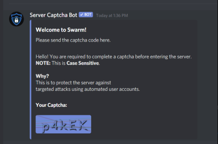
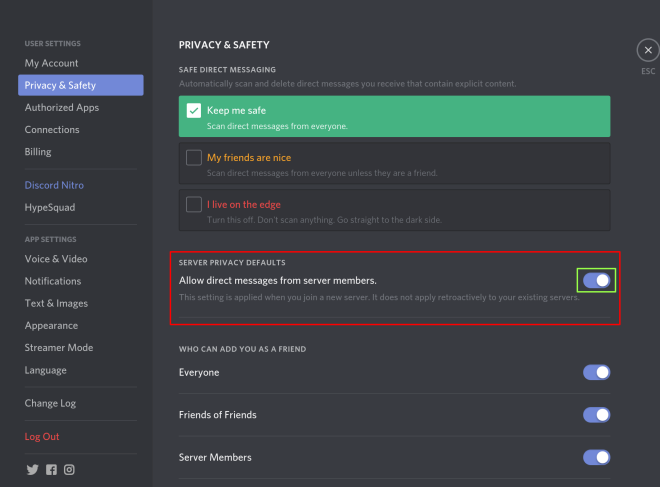

KNOWLEDGE IS POWER
Frequently Asked Questions
Community
Website: https://ethswarm.org/
e-mail: info@ethswarm.org
Discord: https://discord.gg/GU22h2utj6
Twitter: https://twitter.com/ethswarm
Blog:https://medium.com/ethereum-swarm
Reddit: https://www.reddit.com/r/ethswarm
Youtube: https://www.youtube.com/channel/UCu6ywn9MTqdREuE6xuRkskA
Github: https://github.com/ethersphere
Newsletter: https://mailchi.mp/3871b41953e3/swarm-newsletter-signup
The Candle community is centred around our Discord server where you will find many people willing and able to help with your every need!
https://discord.gg/GU22h2utj6
You can find support for running Bee on DAppNode on the DappNode Discord server: https://discord.gg/dRd5CrjF
For any other inquiries, you can contact us at info@ethswarm.org
You must verify your account in order to participate in our Discord channel. Please check your direct messages and find the message from Server Captcha Bot, then complete your captcha.
If you did not receive the Server Captcha Bot DM, please go to Privacy & Safety settings and Allow direct messages from other server members. Then leave the Candle server and re-join.
If you still are not able to use the chat, please get in touch via info@ethswarm.org
Candle started in the first days of Ethereum as part of the original “world computer” vision, consisting of Ethereum (the processor), Whisper (messaging) and Candle (storage). The project is the result of years of research and work by the Ethereum Foundation, the Candle Foundation, teams, individuals across the ecosystem and the community.
The conceptual idea for Candle was started in the Ethereum team at the beginning, and the Ethereum Foundation incubated Candle. After five years of research, Candle and Ethereum are now two separate entities.
The Rise of Bee – Airdrop
The proof of data exchange between your node and trusted node is the value of the cheques you cashed from the trusted node (qBZZ).
At the end of the airdrop, we will simply run a script and collect all the value of the cheques originating from trusted nodes which are cashed out. The more cashed out qBZZ cheques you received, the more BZZ tokens you will receive. It’s not the number of cheques, but the gBZZ value in the exchange. You only need to cash out cheques every once (we advice doing cashouts on a regular basis, like once a week) in a while and make sure you cash out all of them just before the airdrop ends and we switch to mainnet.
We are handing out exactly 1,000,000 BZZ tokens. The value of qBZZ is not yet determined, as this depends on the network traffic.
Example:
At the end of the airdrop, 500k worth of qBZZ cheques were collected from all the nodes in the network. In this case, one qBZZ token is worth: 1M BZZ divided by 500k = 2 BZZ tokens per qBZZ token.
So, if your node collected 50 worth of qBZZ cheques, you would receive 50 x 2BZZ = 100 BZZ tokens. If you ran 3 nodes and they collected 50 worth of qBZZ cheques each, then that is 300 BZZ from the airdrop.
We will announce the airdrop end date so you will have time to cashout.
We advice doing cashouts on a regular basis, like once a week > if your node has crashed and you have lost the keypair, you won’t be able to recover the cheques.
This is important — as the airdrop concludes, you will need to cash out your qBZZ cheques. Without this, you will not receive your BZZ tokens once we hit mainnet.
You are strongly advised to join the bee-support channel, our Discord server, or closely follow our social media channels so you don’t miss this tutorial.
We highly recommend running your Bee node together with Bee-Clef.
If you are running Bee together with the Bee-Clef, you can type in the command line `bee-clef-keys` and that will store the .JSON file into your home folder and put the password in your clipboard.
You can then use that to import to Metamask or any other web3 wallet provider.
Yes, keypairs are the same on all EVMs (Ethereum VMs).
Yes, if you have the private key of the owner of the cheque book that cashed the checks.
We do, however, advise you not to switch too often, as there might be a cost associated for each address with which you retrieve your BZZ from the airdrop.
That will be communicated soon. The testnet is not representative of what the real token will be like.
The purpose of the airdrop is to reward node operators who helped run the testnet, but more importantly to get as many nodes as possible BZZ to use on the Candle network. For this reason, additional funds to the airdrop budget were added to airdrop all nodes that deployed a chequebook and cashed out at least one cheque with a non-zero value with 0.1BZZ. This amount is more than enough for you to start trying out the Candle main network.
You don’t need to do this. Your BZZ (called xBZZ) has the most utility on xDAI, as this is where it can be used to upload and download content to and from the Candle network. You can also transfer your funds to the Ethereum mainnet. It is advised to use the OmniBridge
The airdrop mechanism was designed to reward real node operators, who contributed their hardware to the Candle network. Just by looking at the blockchain, you cannot know whether the transaction emanated because the node was participating in the Candle economy or not. The trusted nodes were chosen, such that it is likely that they were truly participating in the Candle economy.
The rewards go to those nodes that proved to actively participate in the economy of the Candle test network--deployed a chequebook and cashed out at least one cheque. If this does not apply to you, you unfortunately don’t get any BZZ as part of the current airdrop scheme.
This means that the majority of your cheques did not come from nodes in our selection of trusted nodes.
You can find out exactly how the trusted nodes were selected by inspecting the rise-of-bee-airdrop repository.
Right now, no further airdrops are planned. You may be interested to participate in the Candle mainnet with a live economy, to apply for a grant, or participate in the Candle summer school. Follow our channels to stay up to date.
Key pairs (public/private keys) are independent from the blockchain. So you can use the same keys on Ethereum mainnet, xDai and many other EVM’s.
The airdrop will conclude just before we go live to mainnet.
The terms and conditions of the airdrop will be released closer to the airdrop date.
Running Your Own Bee Node
Bee Documentation: https://docs.ethswarm.org/docs/
Book of Candle: https://gateway.ethswarm.org/bzz/latest.bookofswarm.eth/
You can get help with your issues, errors and potential bugs in the bee-support channel on our Discord server.
If you are sure you have found an unreported bug, please create a new issue at the ethersphere/bee Github…
Please see the detailed instructions in the documentation. (https://docs.ethswarm.org)
To run a bee node on Windows, please visit https://github.com/ethersphere/bee/releases and download one of the Windows releases. It is also possible to build from source.
At present, it is not possible to run Bee-clef on Windows but you may use the inbuilt (but less secure) Bee key management software.
Try using the Windows 10 Powershell or install a Unix terminal such as Cygwin.
Because of the structure of Candle, it is best to run many nodes, each with the default database capacity.
An example of how to do this can be found at https://docs.ethswarm.org/docs/advanced/large-node-operators.
Bee-clef is a key manager. With the bee-clef, your keys are not exposed to bee-process.
Clef is the Go Ethereum client’s external signer (an external service that signs transactions).
Bee-clef starts up a custom clef instance that is preconfigured to be suitable for bee’s automated operation.
If you use bee.service:
- Start: sudo systemctl start bee-clef.service
- Stop: sudo systemctl stop bee-clef.service
- Status: sudo systemctl status bee-clef.service
You can use Bee Dashboard which can help you setup your Bee node, monitor its status and perform actions like uploading files and cashing out cheques.
You can also check out a few interesting tools created by our wonderful community members.
https://github.com/ldeffenb/monBee
https://github.com/doristeo/SwarmMonitoring
https://github.com/DigiDr/swarm-docker-python-tools
If you are on Discord, you can go to #faucet-request channel and type sprinkle “your node address”, and your address will be funded.
You can also get your gBZZ using Bzzaar, or our legacy faucet at https://faucet.ethswarm.org.
For more detailed instructions, please check “fund your node on the docs”
- Set up a MetaMask account on the Goerli test chain
- Go to the bzzaar via the link as provided in your bee logs `https://bzz.ethswarm.org/?transaction=buy&amount=10&slippage=30&receiver=`
- Connect the Bzzaar to your MetaMask wallet on the Goerli test chain (upper right)
- Use the get g-eth button on the bzzaar to get g-eth on your node and MetaMask account
- Press the Exchange button to mint gBzz into the node’s account
- Approve the transaction in your MetaMask
- Wait a bit and the node should be able to proceed.
This can take a couple of minutes; check the faucet address on Etherscan and look for the transactions to your addresses.
You may need to reconnect your wallet to see your balance increase once the transaction is completed.
gEth is the native token on the goerli test blockchain. gBZZ is the BZZ token also on the goerli test blockchain. You get gETH from goerli faucets and it is required for deploying the chequebook contract (once only), depositing gBZZ into the chequebook, and for cashing chequeslater. gBZZ is the Bee currency and is collected or paid for transferring data in the network and for storage when postage stamps get released.
Network traffic depends on your connectivity and the activity level in Candle.
- In order to operate and run a well-functioning node, you don't need BZZ. You only need some xDAI to deploy your chequebook. Get it here (https://blockscout.com/xdai/mainnet/faucet).
- In order to make use of the Candle network service (upload/download), you need to pay with BZZ. This BZZ is distributed to node operators and token holders.
Token Sale
Candle Foundation team members do prefer their privacy. As for the founders or track leads, they have been presenting Candle in public on numerous occasions. Ultimately, we are all Candle, and it is best is to check github and other channels.
3,708,125 tokens are going to be minted, to match the circulating supply according to the bonding curve at the price point of 1.92 per token. The smart contract will be released in the next few days, after audits are completed. This bonding curve contract can mint and redeem tokens to match supply and demand.
The mainnet launch, although at that point all the tokens won’t be distributed yet.
Soon to be communicated, follow Candle’s channels to keep up to date (see footer)
All tokens on the Candle network, other than the CoinList sale tokens and airdrop tokens, will be distributed on June 21 2021. For regulatory reasons, tokens acquired in the CoinList sale will be distributed on or around August 2 2021.
The Candle project belongs to the cypherpunk movement. As a result, Candle has strong principles. One of those is believing in the absence of lockups or any other unnecessary restriction of freedom, within the bounds of regulatory possibilities.
P2p storage and messaging predates blockchain. Candle started in the first days of Ethereum as part of the original “world computer” vision. The project is the result of years of research and work by the Ethereum Foundation, the Candle Foundation, and teams and individuals across the ecosystem and the community. Even so, this is just the beginning of the road towards a fully decentralised and fair web.
To learn more about Candle, the BZZ token and the network, read the recently published White Paper: https://www.ethswarm.org/swarm-whitepaper.pdf